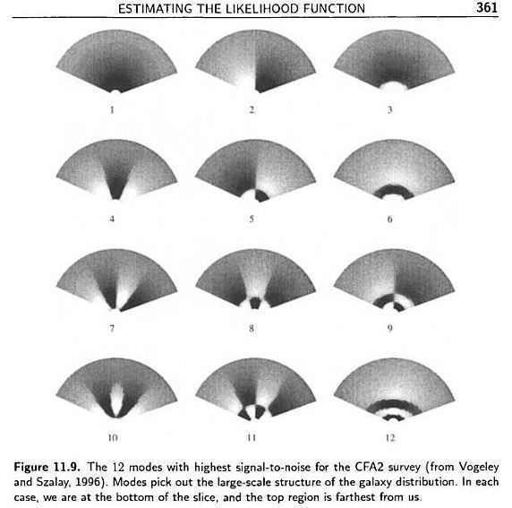

宇宙å¦ä¸çš„统计方法ã€�ä¸�】
宇宙å¦ä¸çš„统计方法笔记系列，第四篇：likelihood 函数的计算方法，包括如何剔除没用的模å¼�和如何找到 likelihood çš„æ��值。
ç³»åˆ—æ–‡ç« ç›®å½•ï¼š
- 宇宙å¦ä¸çš„统计方法ã€�甲】
- 宇宙å¦ä¸çš„统计方法ã€�乙】
- 宇宙å¦ä¸çš„统计方法ã€�丙】
- 宇宙å¦ä¸çš„统计方法ã€�ä¸�】
在 likelihood 方程里é�¢æ˜¯éœ€è¦�求解矩阵的逆（å�¯å�‚考CMB çš„ likelihood 方程），而å®�际观测ä¸æ•°æ�®é‡�å�ˆæ��大，所有直æ�¥æ±‚逆会å®�é™…è®¡ç®—å¾ˆæ…¢ï¼Œå› æ¤ä¸€ç§�有效的求解 likelihood function 的方法是很é‡�è¦�的。
Modern Cosmology 里é�¢ä¸¾äº†ä¸€ä¸ªå…·ä½“的例å�。
Karhunen-Loeve Techniques
这�方法的主�想法是，丢�那么严�被噪声污染的模。比如我们��有用的模�有10%，那么计算逆矩阵的�，计算�就�少到了��的1/1000。但是如何找出那些有用的模呢？
如æ�œ covariance matrix 是对角的，我们之å‰�在 ã€�乙】 部分ä¸æ��到对äº�对角化的 covariance matrix，我们å�¯ä»¥å¾—到 \(C_S/C_N\)，也就是信噪比。通过看信噪比的强弱，就å�¯ä»¥çŸ¥é�“那些模是有用的。å�¯æ˜¯çœŸæ£çš„观测ä¸ï¼Œå¾—到的数æ�®çš„ covariance matrix 并ä¸�是对角化的，得到信噪比就比较困难。这æ£æ˜¯ Karhunen-Loeve 方法所解决的问题。
ç�°åœ¨å�‡å®šæˆ‘们有 \(N_p\) 个数æ�®ç‚¹ï¼Œ\(\Delta_i\)，ä¸�之å‰�ä¸€æ ·ï¼Œè¿™ä¸ªæ•°æ�®ç‚¹æ˜¯ç”±ä¿¡å�· \(s_i\) 和噪声 \(n_i\) 组æˆ�的。为了简å�•ï¼Œæˆ‘们å�‡å®šä¿¡å�·å’Œå™ªå£°æ˜¯ä¸�å…³è�”的。
使用矩阵表达�，那么 covariance martrix 就�以写�
\[ {\bf C} \equiv \langle \Delta \Delta^{T} \rangle = {\bf C_S} + {\bf C_N} \]
Karhunen-Loeve technique 是利用一系列矩阵å�˜æ�¢æŠŠ noise covariance matrix 写æˆ�å�•ä½�阵，然å�� signal covariance matrix 写æˆ�对角形å¼�ï¼Œè¿™æ ·å°±å�¯ä»¥æ¯”较信å�·å’Œå™ªå£°äº†ï¼Œå½“然我们用的数æ�®çŸ©é˜µä¹Ÿåº”该å�šç›¸åº”çš„å�˜æ�¢ã€‚比如我们把数æ�®çŸ©é˜µè½¬åŠ¨
\[ {\bf \Delta}’ = {\bf R} {\bf \Delta} \]
那么相应的 covariance matrix 也就��了
\[ {\bf C} = \langle ({\bf R \Delta}) ({\bf R \Delta}) \rangle ={\bf R C R^{T}} \]
如� \({\bf C}’\) 是个对角化的形�，那就好�了。所以，Karhunen-Loeve technique 的�作过程应该是：
- 通过转动矩阵 \({\bf R_1} \) 把 \({\bf C_N}\) 对角化为 \({\bf C_N}”\) ï¼›
- 通过矩阵 \({\bf R_2}\)把 \({\bf C_N}”\) 化为å�•ä½�阵：\[ {\bf C_N}’ = {\bf R_2 R_1 C_N R_1^T R_2^T}\] å…¶å®� \(\bf R_2\) 是个对角阵，所以 \({\bf R_2^T} = {\bf R_2} \) ï¼›
- 通过转动矩阵 \({\bf R_3}\) 把进行过 \({\bf R_1}\) å’Œ \({\bf R_2}\) æ“�作的 \({\bf C_S}\) 对角化为 \({\bf C_S}’\) ：\[{\bf C_S}’ = {\bf R_3 R_2 R_1 C_S R_1^T R_2 R_3}\]。å�Œæ—¶ \(\bf C_N’\) 也必须进行 \(\bf R_3\) æ“�作，但是由äº�å®�对称矩阵的对角化通过 unitary 的矩阵æ�¥å®�ç�°çš„（\({\bf R_3^{-1} = {\bf R_3^T}}\)），所以å®�际上å†�对 \(\bf C_N’\) 进行 \(\bf R_3\) æ“�作并ä¸�改å�˜ \(\bf C_N’\) 是å�•ä½�é˜µçš„æ€§è´¨ï¼Œå› æ¤è¿™ä¸€æ¥ä¸�需è¦�任何计算；
- 对数æ�®ç‚¹è¿›è¡Œç›¸åº”çš„å�˜æ�¢ \[ {\bf \Delta’} = ( {\bf R_3 R_2 R_1 } ){\bf \Delta} \]
è¿™æ ·å�˜æ�¢ä¹‹å��，我们最终拿到的 covariance matrix 是
\begin{equation}
{\bf C}‘ \equiv \langle {\bf \Delta’\Delta’^T } \rangle = {\bf C_N’} + {\bf C_S’} = {\bf I} + {\bf C_S’}
\end{equation}
é€šè¿‡åˆ¤æ– \(\bf C_S’\) çš„å…ƒç´ ï¼ˆå�ªæœ‰å¯¹è§’元）ä¸� 1 的大å°�，å�¯ä»¥åˆ¤æ–æŸ�个模å¼�是å�¦åº”该èˆ�弃。
Modern Cosmology P 356 有一个数æ�®çŸ©é˜µå�ªæœ‰ä¸¤ä¸ªå…ƒç´ 的例å�。
Karhunen-Loeve 方法已ç»�有了很é‡�è¦�的应用。下图是 Bunn å’Œ Bond 用 K L techniques é‡�分æ�� COBE å�«æ˜Ÿæ•°æ�®çš„å‡ ä¸ªå›¾ï¼ˆModern Cosmology P360）

图ä¸å·¦ä¸Šæ˜¯ signal to noise (S/N) 最大的模å¼�，而å�³ä¸‹æ˜¯ S/N 最å°�的模å¼�。å®�际上左上角主è¦�是 quadrupole 的贡献，å�³ä¸‹è§’的图主è¦�是å°�尺度观测的贡献。
下图是 K L techniques 用在 galaxy survey 上�的情况（Vogeley 和 Szalay，1996）。（Modern Cosmology P361）

上图ä¸å±•ç¤ºçš„是 12 个有最大 S/N 的模å¼�，都是大尺度的模。也就是说 K L techniques æ�°å¥½å�§ galaxy survey ä¸çš„大尺度的数æ�®ç›é€‰å‡ºæ�¥äº†ã€‚
Karhunen-Loeve technique çš„å�¦å¤–一个很é‡�è¦�的用途是进行自洽性分æ��。Modern Cosmology P360 给了一个 the Python experiment 的例å�。由äº�æ•°æ�®ç‚¹å¤ªå¤šï¼Œä¸�方便直æ�¥æ£€æŸ¥æ•°æ�®çš„自洽性。äº�是他们使用 Karhunen-Loeve technique 把大 S/N çš„æ•°æ�®æŒ‘出æ�¥ï¼Œç„¶å��看看是ä¸�是跟观测数æ�®æ‰€å�šçš„基本的概ç�‡å�‡å®šç›¸ç¬¦ï¼Œæ¯”如这里数æ�®åº”该是 Gaussian 的，但是 the Python experiment å°�组 第一次所用的 noise covariance matrix 导致ç›é€‰å‡ºæ�¥çš„这些结æ�œå¹¶ä¸�是 Gaussian 的，äº�是他们就用新的 noise covariance matrix é‡�æ–°å�šäº†åˆ†æ��。（具体例å�分æ��请翻阅 Modern Cosmology P360）
在å®�际的观测ä¸ï¼Œè¿™ç§�方法并ä¸�æ˜¯ä¸‡èƒ½çš„ï¼Œå› ä¸ºé¦–å…ˆæˆ‘ä»¬å¿…é¡»ç�°æœ‰ä¸€ä¸ªé¢„设的 signal covariance matrix \(\bf C_S\)，其次，这ç§�方法在进行了上é�¢çš„这么多的æ“�作进行ç›é€‰æ•°æ�®ç‚¹ä¹‹å��，还是需è¦�按照å�Ÿæ�¥çš„求解 likelihood 的方法æ�¥è®¡ç®—，也就是还是è¦�求逆，虽然我们上é�¢è¿›è¡Œè¿‡äº†å¯¹è§’化，但是这å�ªæ˜¯ä¸€ä¸ªç‰¹æ®Šç‚¹è¿›è¡Œçš„，也就是选择 \(\bf C_S\) æ˜¯æ‰€å®šçš„ç‚¹ï¼Œè¿™æ ·åœ¨å…¶ä»–ç‚¹ï¼Œè¿™äº›çŸ©é˜µå¹¶ä¸�是对角化的，计算还是比较å¤�æ�‚。
Optimal Quadratic Estimator
上�的 K L techniques 还是�硬算 likelihood 的，而 optimal quadratic estimator 是一��需��完整的求解全局的 likehood 的方法。
Optimal quadratic estimator 是类似äº� Newton åˆ‡çº¿æ³•æ±‚æ–¹ç¨‹çš„æ ¹çš„æ–¹æ³•ï¼Œå› ä¸ºå®�际上我们è¦�求解的é‡�å�ªæ˜¯ likelihood æ��大的时候的å�‚数值，所以我们å�ªéœ€è¦�æ‰¾åˆ°å¦‚ä¸‹æ–¹ç¨‹çš„æ ¹å°±å�¯ä»¥äº†ï¼Œ
\[ \left.\frac{\partial \scr L}{\partial \lambda} \right| _ {\lambda = \bar \lambda}= 0 \]
按照 Newton-Raphson 方法的想法，需è¦�选定一个åˆ�始的å�‚数空间的ä½�ç½® \(\lambda^{(0)}\)ï¼Œå› ä¸ºå¯¹äº�多项å¼�å½¢å¼�çš„å‡½æ•°è¿™æ ·çš„ç®—æ³•æ¯”è¾ƒæœ‰ä¼˜åŠ¿ï¼Œæ‰€ä»¥æˆ‘ä»¬ç�°åœ¨å�‡å®š likelihood 是 \(\bf C_S\) å’Œ \(\bf C_N\) çš„ Gaussian 函数，那么我们对 likelihood å�– log 之å��çš„å¼�å�å°±å�˜æˆ�多项å¼�å½¢å¼�äº†ã€‚è¿™æ ·æˆ‘ä»¬æŠŠ \(\ln \scr L\) 在 \(\lambda^{(0)}\) 附近展开
\[
(\ln \mathscr L) _{,\lambda} (\lambda) = (\ln \mathscr L) _{,\lambda}(\lambda^{(0)}) + (\ln \mathscr L) _{,\lambda\lambda}(\lambda^{(0)}) ( \lambda – \lambda^{(0)}) \]
å�ªå�–å‰�é�¢çš„两项，并且把æ��值点真æ£çš„å�‚数值 \(\hat \lambda\)带入，有 \({\ln\scr L}_{,\lambda} = 0\)，å�³
\[ \hat\lambda \approx \lambda^{(0)} – \frac{ (\ln \scr L) _{,\lambda}(\lambda^{(0)}) }{(\ln \scr L) _{,\lambda\lambda}(\lambda^{(0)})} \]
å®�际上上å¼�ä¸æ‰€è°“çš„ \(\hat \lambda\) å�ªæ˜¯ä¸€ä¸ªè¿‘ä¼¼çš„å‡†ç¡®å€¼ï¼Œå› ä¸ºæˆ‘ä»¬å�ªå�–了 Taylor 展开的å‰�两项。但是通过è¿ä»£çš„方法，我们就å�¯ä»¥æ— é™�趋近äº�真æ£çš„æ��值。
è¿™ç§�方法ä¸å‡ºç�°äº† likelihood 的导数。å�¯ä»¥ç”¨ CMB 的情况作为例å�æ�¥çœ‹çœ‹å¦‚何计算。对 CMB æ�¥è¯´
\[ (\ln \mathscr L) _{,\lambda} = \frac{\partial}{\partial \lambda}\left[ -\frac{1}{2}\ln(\det C) – \frac{1}{2} \Delta C^{-1}\Delta \right]\]
利用矩阵的一些计算技巧，\(\ln \det(C) = \mathrm{Tr} \ln(C) \) å’Œ \( C_{,\lambda}^{-1} = – C^{-1} C _ {,\lambda} C^{-1} \)
\begin{eqnarray}
(\ln \mathscr L)_{,\lambda} &=& \frac{\partial}{\partial \lambda}\left[ -\frac{1}{2}\ln(\det C) – \frac{1}{2} \Delta C^{-1}\Delta \right] \nonumber \\
&=& -\frac{1}{2}\frac{\partial}{\partial \lambda} \ln(\det C) – \frac{1}{2} \Delta \frac{\partial}{\partial \lambda} C^{-1} \Delta \nonumber \\
&=& -\frac{1}{2} \mathrm{Tr} [C^{-1} C _ {,\lambda}] + \frac{1}{2}\Delta C^{-1}C _ {,\lambda}C^{-1} \Delta
\end{eqnarray}
��使用上述技巧，�以得出二阶导数
\[ (\ln \mathscr L) _ {,\lambda\lambda} = -\Delta C^{-1}C _ {,\lambda} C^{-1} C _ {,\lambda} C^{-1}\Delta + \frac{1}{2} \mathrm{Tr} [ C^{-1} C _ {,\lambda} C^{-1} C _ {,\lambda} ] +\frac{1}{2} ( \Delta C^{-1} C _ {,\lambda\lambda} C^{-1} \Delta – \mathrm {Tr} [ C^{-1} C _ {,\lambda\lambda} ] ) \]
为了方便，定义一个 curvature，
\[ \mathscr F = – \frac{\partial^2 \ln \mathscr L}{\partial \lambda^2} \]
并且
\[ F _ {,\lambda\lambda} \equiv \langle \mathscr F \rangle = \frac 1 2 \mathrm{Tr} [ C _ {,\lambda} C^{-1} C _ {,\lambda} C^{-1} ] \]
�是
\begin{equation}
\hat\lambda = \lambda^{(0)} + F^{-1} _ {\lambda\lambda} \frac{\Delta C^{-1}C _ {,\lambda} C^{-1} \Delta – \mathrm {Tr} [ C^{-1} C _ {,\lambda} ] }{ 2 }
\end{equation}
ä»�这个 CMB 的例å�å�¯ä»¥æ›´å¥½çš„了解具体如何计算。按照我们一开始的想法，å�ªè¦�æˆ‘ä»¬æŠŠæŒ‰ç…§è¿™ä¸ªè¿‡ç¨‹å¤šè¿›è¡Œå‡ æ¬¡è¿ä»£å°±å�¯ä»¥äº†ã€‚
但是上�所讲仅仅是一个�数的情况，那么对�多个�数的情况呢？
多�数的情况就��了
\begin{equation}
\hat \lambda _ \alpha^{(0)} + F^{-1} _ {\alpha\beta} \frac{ \Delta C^{-1} C _ {,\beta} C^{-1} \Delta – \mathrm{Tr} [ C^{-1} C _ {,\beta} ] }{ 2 }
\end{equation}
å…¶ä¸å�Ÿæ�¥çš„ curvature å�˜æˆ�了 Fisher matrix
\[ F _ {\alpha\beta} \equiv \langle – \frac{ \partial^2 (\ln \mathscr L) }{ \partial \lambda _ {\alpha} \partial \lambda _ {\beta} } \rangle = \frac12\mathrm{Tr}[ C _ {,\alpha} C^{-1} C _ {,\beta} C^{-1} ] \]
到æ¤ä¸ºæ¢ï¼Œè¿™ç§�方法告诉我们其å®�我们ä¸�需è¦�曲完整的求解整个å�‚数空间ä¸çš„ likelihood function，而å�ªéœ€è¦�估计一个å�‚数空间的点，然å��通过è¿ä»£çš„方法就å�¯ä»¥äº†ã€‚è¿™æ ·å�ªéœ€è¦�求解一个局域的å�‚数空间而已。
下一æ¥å°±æ˜¯è¦�得到å�‚数误差。其å®�我们已ç»�å�‡å®šäº†æ•°æ�®æ˜¯ Gaussian 的，所以å�ªéœ€è¦�按照 Gaussian 分布æ�¥ç»™å®šè¯¯å·®å°±å�¯ä»¥äº†ã€‚
å› æ¤ variance of estimator 就是
\[ \langle (\hat\lambda _ \alpha – \bar \lambda _ \alpha)(\hat \lambda _ \beta – \bar \lambda _ \beta) \rangle = (F^{-1}) _ {\alpha\beta} \]
Modern Cosmology P 367 ä¸æœ‰å…³äº�为什么我们这里求解的 \(\hat\lambda\) 的期望值æ£å¥½ç‰äº�真æ£çš„ç�†è®ºå€¼ \(\bar \lambda\) çš„è¯�æ˜�。这个è¯�æ˜�ä»�一方é�¢è¯´æ˜�了我们按照 Gaussian 分布给出结æ�œçš„误差是æ£ç¡®çš„。
Fisher matrix å�˜å¾—é��常é‡�è¦�ï¼Œå› ä¸º Fisher matrix ä¸�ä»…ä»…è¦�用æ�¥è®¡ç®—å�‚数空间æ��值，还直æ�¥å†³å®šäº†æˆ‘们的数æ�®æ‹Ÿå�ˆç»“æ�œçš„好å��。下一篇 post 我们就æ�¥çœ‹çœ‹ Fisher matrix 的计算方法。
本文没有 flag。

最近评论